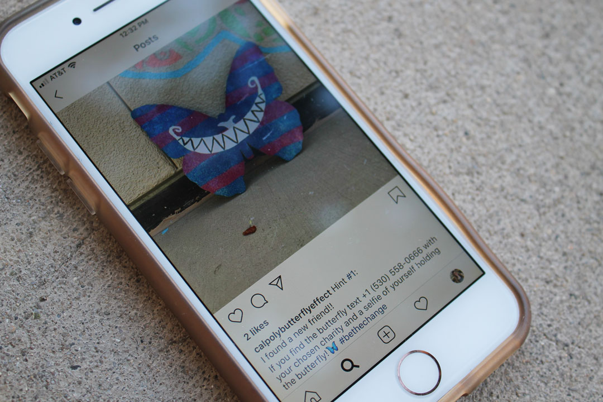
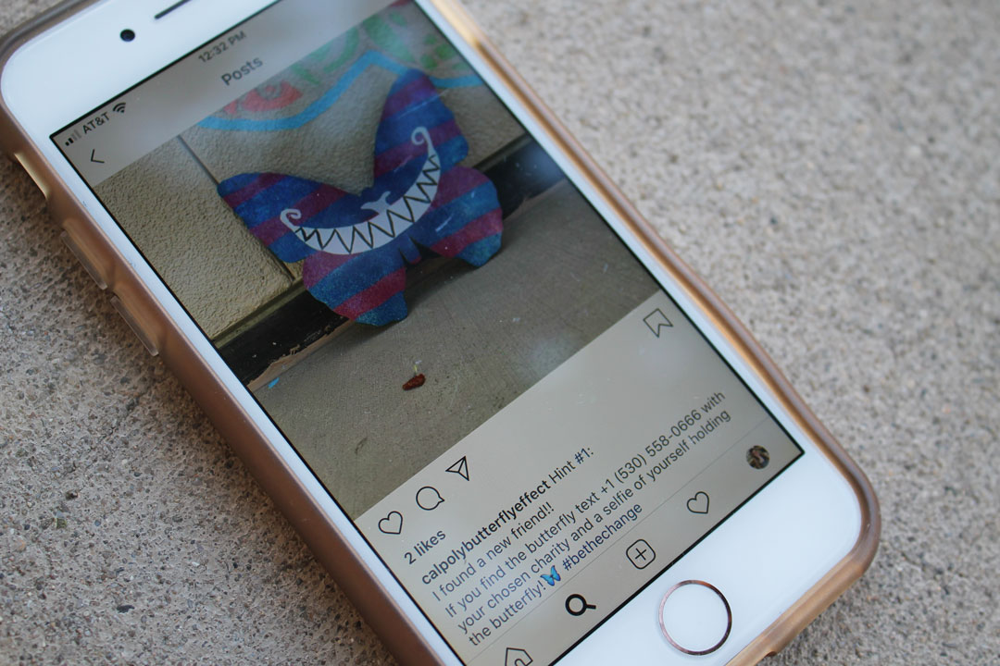

The Butterfly Effect Theory suggests that the small flutter of a butterfly wing can affect the molecules around it, setting off a chain of reactions that lead to major change. This concept is what inspires the Cal Poly Butterfly Effect Club. Small acts of kindness and generosity can have notable and meaningful impacts.


 
